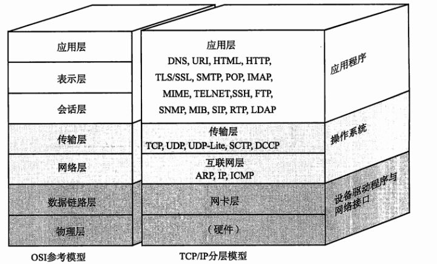

说在前面, 计算机网络其实远远比我们想象的要复杂; 我暂时想不到一个合适的类比, 如果非要说的话,我脑中的第一个印象是那部日本记录片–寿司之神; 这部片子向观众展示了一种大部分人认为”谁都可以做”的料理(事实上也没错); 但实际上真正的日料厨师, 是能够了解寿司这种一个中文单词对应四个日语词汇的料理个中工序有多么复杂和深奥; 单独拿出其中一个部分, 都能录制一部俩小时的纪录片来讲解;
计算机网络也是这样, 我们看似简单的操作–打开浏览器, 输入网址然后访问你想要的页面; 背后发生的事情其实远超我们的想象, 其中任何一个环节拿出来也都能成为一个独立课题; 我也不认为自己能强大到将里面的细节一一呈现, 所以只选取其中的几个部分, 结合自己的理解做一些分享, 如有谬误欢迎指证;
嗯，这是整个系列的大纲，要是没有你需要的东西也可以节省点时间ʕ•͡•ʕ•͡•ʔ•͡•ʕ•͡•ʕ•͡•ʔ•͡•
太长不看党可直接看每章小结;
- TCP/IP协议是什么
- 语言的诞生和信息的传递
- TCP/IP协议与网络通信
- 小结
- TCP/IP协议能做什么
- 网路如何连接
- 协议扮演的角色
- 小结
- TCP/IP协议怎么做到的
- TCP/IP协议设计的基本思路
- 协议栈内部结构
- 协议栈处理数据发送流程简介
- 什么是socket以及它能做什么
- TCP/IP和数据包
- UDP的特点和数据收发方式
- 小结
TCP/IP协议是什么
语言的诞生和信息的传递
信息的传递对于生物的生存繁衍是比不可少的, 无论是动物或者植物, 彼此之间无时不刻都需要传递信息, 共享当前环境变化, 发现天敌规避危险, 或是发现食物等等; 关于语言的诞生, 目前说法不一; 因为语言的诞生要追溯到史前时期, 当时很少有直接留下的历史痕迹供人参考; 这个话题也不是本文的重点, 不过我们可以思考一下语言为什么诞生;
也许大部分人的第一反应是”为了传递信息”, 这个想法当然没错; 但如果我们再深入一点思考, 就会引出更多的问题—-
- 传递信息的目的是什么?
- 如何准确的传递?
- 如何更高效的传递?
我记得小时候看过探索频道讲一只蜜蜂如何告诉蜂群哪里有足够的花丛供它们采蜜; 首先一只蜜蜂发现一处花丛, 确认之后回到蜂巢, 通过飞行的轨迹告诉伙伴们这个信息, 然后蜂群会跟随其到达花丛;
姑且不论我小时候的记忆是否有偏差, 或者蜜蜂是否真的这样采蜜; 但想想这个过程, 刚刚的三个问题里, 前两个似乎没什么问题; 但显而易见的这不是一个高效的信息传递方式, 如果那只蜜蜂可以直接告知蜂群花丛的准确位置, 而不用自己再带路的话, 它就可以利用蜂群前往花丛的时间去发现下一处采蜜地点, 这样整个蜂群获取食物的效率将大大提升, 比如下面是一只普通的蜜蜂和一只高效的蜜蜂(dog);
知乎上常有这样的月经问题—-其他如果恐龙没有灭绝是否能发展出文明, 或者人类为什么能区别于其他物种发展文明并统治地球; 其中有一个高赞答案把文明的发展和语言以及文字的出现联系在了一起; 这个想法大部分我是赞同的, 对于信息的抽象能力必然是提高了其传递的效率, 减少了沟通成本; 举个简单的栗子:用阿拉伯数字和罗马数字同时表示一百万, 前者表示为 1,000,000 即可, 而罗马数字最高用M表示1000, 再往上就没有了; 所以你想书写一百万的话, 需要写一千个M… 所以不可否认的是, 无论对于任何一项工作, 团体沟通成本的降低必然是一个绝对性的优势;
回到我们刚刚思考的三个问题, 可以得出一些简单的结论:
- 传递信息的目的是什么?
团体之间共享数据(信息) - 如何准确的传递?
构建一套双方认可的校验机制; - 如何更高效的传递?
构建一套在不丢失数据的情况下尽可能的抽象和包装信息的机制;
TCP/IP协议与网络通信
先回答一个问题: 什么是TCP/IP协议?
一般情况下我在网上google某个问题, 都会遇到两种答案, 一种是说人话的, 一种是不说的; 这两者的存在都有各自的道理, 就和同性恋和异性恋一样; 所以我基本都能理解, 采用哪种看具体情况而定; 回到刚刚的问题, 先看看不说的;
来自WIKI的解释
互联网协议套件（英語：Internet Protocol Suite，縮寫IPS）[1]是一個网络通訊模型，以及一整個网络传输协议家族，為網際网络的基礎通訊架構。它常被通稱為TCP/IP协议族（英語：TCP/IP Protocol Suite，或TCP/IP Protocols），简称TCP/IP[2]。因為该協定家族的兩個核心協定：TCP（传输控制协议）和IP（网际协议），為该家族中最早通過的標準[3]。由於在網絡通讯协议普遍采用分层的结构，当多个层次的协议共同工作时，类似计算机科学中的堆栈，因此又被称为TCP/IP协议栈（英語：TCP/IP Protocol Stack）[4][5] 。这些协议最早发源于美国国防部（縮寫為DoD）的ARPA网项目，因此也被稱作DoD模型（DoD Model）[6]。這個協定套組由互联网工程任务组負責維護。
不知道其他人看是什么感觉, 反正我初中看的时候抛开英文单词其他中文凑一起看完大概就这表情…
其实这个可以理解, 因为我自己也想了很久, 发现凭借现在对这知识的理解根本无法用简洁的一句话准确的表达TCP/IP协议的整个精髓; 但我还是想尝试一下;
当一个非同行从业者(或者面试官)问起你什么是TCP/IP的时候, 可以这样回答(说人话的部分):
TCP/IP协议是为了应对互联网上传输数据的不可靠性, 区别于UDP协议设计的一套可靠的用于端到端的字节流传输协议; 它为了应对互联网中不同网络的不同带宽, 延迟, 数据包大小和不同的拓扑结构而设计了一套能自适应这些不同点的机制来确保数据的可靠传输;
简而言之, TCP/IP协议, 按简单的理解就是字面上协议的意思; 只不过它的服务对象是互联网上的两个终端, 再白丁一点的解释, 就是两台设备, 例如两台电脑, 然后它的特点就是可靠传输; 它和UDP的区别, 就像一个是放在你小区门口挂在保安室外面栏杆上的外卖, 而另一个是敲开你家门送到你手里的;
网络通信往大了讲是一个很宽泛, 涉猎面积很广的课题; 我从小写作文就和唱歌一样, 一不留神就跑题(调)很远, 所以为了避免这个情况, 这里只说侠义上的网络通信, 即Internet, 由于TCP/IP的提出和阿帕网(ARPANET)间隔时间太短, 基本上都会放到一起介绍; 阿帕网作为伟大的互联网的前身, 创立于1962年, 十二年后TCP/IP的设计思想就提出了; 而那之后1980年到1990年开始扩张并进入亚洲; 在1990年的圣诞节万维网的所有装备一一解锁:超文本传输协议(HTTP), 超文本标记语言(HTML), 第一个网页浏览器等等;
网络通信的理解可以TCP/IP协议一样拆开来看, 网络+通信; 离开网络的通信我们耳熟能详, 从课本里听到的烽火狼烟信鸽, 到生活中随处可见的长途电话或短距对讲机; 而这些的传输信息和形式都极为有限; 例如画面和图像的互动传递在网络通信时代到来之前成本是极其高昂的; 而网络通信则把这些变得无限简单; 两台终端, 一个可靠的网络, 坐地日行八万里就有了全新的释义;
要说清楚网络通信(我并不想(dog)), 就离不开OSI模型, 而TCP/IP也有自己的分层模型, 二者可以对比来看, 比较容易理解; 不理解也没啥, 我会试着讲清楚, 先看个图;
图片源自网络
OSI模型要讲清楚值得单独用一篇文章来聊聊, 这个系列里暂时只介绍TCP/IP的模型; 如果简单理解网络模型都可以从下往上看, 或者说–从抽象往具体看; 计算机里例如内存, 指令集, 网络模型这样的东西比较难以理解, 就是因为它们的存在过于抽象; 而显示屏, 主板, 键盘鼠标, 甚至内存条; 这些都很具体, 所以理解起来简单不少; 网络模型的理解也可以先从我们看得到的东西开始了解, 即物理层; 一台电脑想要连接上网络, 网卡必不可少; 无论是有线还是无线, 都需要一个接入外部网络的出口; 其次是和中间设备的连接线(物理), 通过连接线连接到中间设备, 才能进行网络传输; 这些我们看得见, 摸得着的物理设备几乎都包含在前两层, 这个OSI和TCP/IP是一样的, 也就是上图里的深色部分;
而再往上走, 就是比较抽象的部分; 即真正完成网络中数据交换的部分;
小结
TCP/IP协议是什么
TCP/IP协议是为了应对互联网上传输数据的不可靠性, 区别于UDP协议设计的一套可靠的用于端到端的字节流传输协议;它为了应对互联网中不同网络的不同带宽, 延迟, 数据包大小和不同的拓扑结构而设计了一套能自适应这些不同点的机制来确保数据的可靠传输; 按简单的理解就是字面上协议的意思; 只不过它的服务对象是互联网上的两个终端, 它的存在对比于UDP可以提供网络上的可靠传输服务;语言的诞生和信息的传递
语言的诞生是为了传递信息(可以这样理解)
- 传递信息的目的是什么?
团体之间共享数据(信息) - 如何准确的传递?
构建一套双方认可的校验机制; - 如何更高效的传递?
构建一套在不丢失数据的情况下尽可能的抽象和包装信息的机制;
- TCP/IP协议与网络通信
TCP/IP的五层模型:
应用层(TFTP，FTP，HTTP，SNMP，SMTP，DNS，Telnet);
传输层(TCP,UDP,RTP);
网络层(IP,ICMP,RIP,IGMP);
数据链路层(ARP,RARP);
物理层(ISO2010，IEEE802,IEEE802.2);
TCP/IP协议能做什么
网路如何连接
下面的图展简单的展示了网络网络如何连接起来, 以及对应设备和五层之间的关系;
事实上TCP/IP模型层与层之间的界限并不是非常明确, 至少在前三层是这样的; 你很难从可视化的角度具体的区分到底哪个设备属于哪一层, 事实上也没有这个必要(但如果更专业的区分, 他们之间可以是明确的); 网络模型本身是抽象出的东西, 目的是为了直观和准确的描述数据在整个网络中传递时的形态和发生的事情; 网络的连接过程可以大致简化成下面的流程:
- 将已经定义的网址交给浏览器解析出真实的网络端地址;
- 生成HTTP请求通知;
- 发送请求并得到节点的响应;
- 委托协议栈发送出消息体
- 计算机将按照协议封装好的网络包通过集线器,路由器转发;
- 服务器接收到网络包解析并处理, 然后逆向上述操作完成响应通知;
协议扮演的角色
协议和协议栈是不同的东西; 下图展示了协议栈在整个网络传输里具体的位置:
图片来源: references[2]
协议简言之就是人为定义的用于两台终端进行网络通信的一套共通标注; 而协议栈则可以理解为函数库, 它是个中协议的总和, 而且其中的协议是有对应的层级关系的, 即上层到下层, 从其名字可以体现出对其中协议的调用顺序(栈这里作为计算机术语, 可以自行google); 于是我们这里可以得出结论, 即协议在整个网络连接中扮演了承上启下的作用; 它介于应用程序和网卡之间, 将浏览器或程序产生的数据按照规则封装成数据包并传递给下一层;
小结
了解了网络的连接方式, 和协议在当中扮演的角色; 就能明确协议具体能做的事情了;协议介于应用程序和网卡之间, 负责按照服务端和客户端约定好的标注完成数据包的封装; 提供给下一个网络层进行传输;
(未完持续)
references：
[1] https://zhuanlan.zhihu.com/p/33889997
[2] https://book.douban.com/subject/26941639/
[3] https://book.douban.com/subject/10510747/